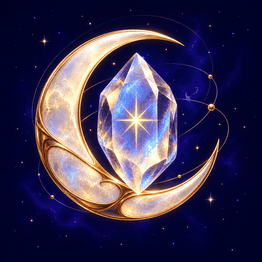

NATALITH hakkında sorunuz, öneriniz ya da bir hata bildiriminiz varsa doğrudan yazabilirsiniz. Genellikle birkaç gün içinde dönüş yapılır.
E-posta gönderveya doğrudan: hello.scannerstudio@gmail.com
If you have a question, a suggestion, or a bug to report about NATALITH, write directly. Replies usually come within a few days.
Send an emailor write to: hello.scannerstudio@gmail.com
Evet. Satın alma Apple Kimliğinize bağlıdır. Yeni cihazda aynı Apple Kimliğiyle giriş yapmanız yeterli; gerekirse taş sayfasındaki “Satın alımları geri yükle” seçeneğini kullanın.
Bu bilgiler yalnızca cihazınızda saklanır ve hiçbir sunucuya gönderilmez. Cihaz değiştirdiğinizde doğum tarihinizi yeniden girmeniz gerekir.
Evet. Burç yorumu, ay evresi, taşlar ve koleksiyon tamamen çevrimdışı çalışır. Bağlantı yalnızca satın alma ve satın almayı geri yükleme için gerekir.
iOS Ayarlar → Bildirimler → NATALITH yolundan bildirimlere izin verildiğinden emin olun. İzin bir kez reddedildiyse uygulama tekrar soramaz.
Günün taşı iPhone’da hesaplanıp saatinize aktarılır, bu yüzden telefondaki uygulamayı bir kez açmanız yeterlidir. Saat ve telefon aynı Apple Kimliğine bağlı ve eşleşmiş olmalıdır.
Yalnızca telefonunuzda. Not ve edinme tarihi saate gönderilmez, hiçbir sunucuya yüklenmez ve yedeklenmez; uygulamayı silerseniz kaybolur.
Hayır. Uygulamadaki içerik eğlence ve kültürel amaçlıdır; taşlar hiçbir hastalığı teşhis etmez, tedavi etmez veya önlemez. Sağlık konularında hekiminize danışın.
Yes. The purchase is tied to your Apple Account. Sign in with the same Apple Account on the new device; if needed, use “Restore purchases” on the stone page.
That information is kept only on your device and is never sent to a server, so you will need to enter your birth date again after switching devices.
Yes. The reading, the moon phase, the stones, and your collection all work offline. A connection is needed only to buy Full Access or restore it.
Check iOS Settings → Notifications → NATALITH and make sure notifications are allowed. Once permission is denied, the app cannot ask again.
The day’s stone is worked out on the iPhone and passed to the watch, so opening the app on the phone once is enough. The watch and the phone have to be paired and on the same Apple Account.
On your phone only. The note and its date are never sent to the watch, uploaded to any server, or backed up; deleting the app deletes them.
No. The content is for entertainment and cultural purposes; stones do not diagnose, treat, or prevent any illness. Consult a physician on health matters.
NATALITH'in hesabı yoktur; adınız, e-postanız veya konumunuz sorulmaz. Doğum tarihiniz, kaydettiğiniz taşlar ve notlarınız yalnızca cihazınızda kalır.
Tek istisna satın almadır: Tam Erişim'i aldığınızda işlem, hakkı başka cihazınızda geri yükleyebilmek için RevenueCat üzerinden yürür. Oraya adınız veya e-postanız değil, yalnızca işlemin kendisi ve kuruluma atanan anonim bir tanımlayıcı gider.
NATALITH has no account; it never asks for your name, email, or location. Your birth date, saved stones, and notes stay on your own device.
Buying is the one exception: a Full Access purchase is resolved through RevenueCat so the entitlement can be restored on another device. What goes there is the transaction and an anonymous identifier for the install — never your name or your email.